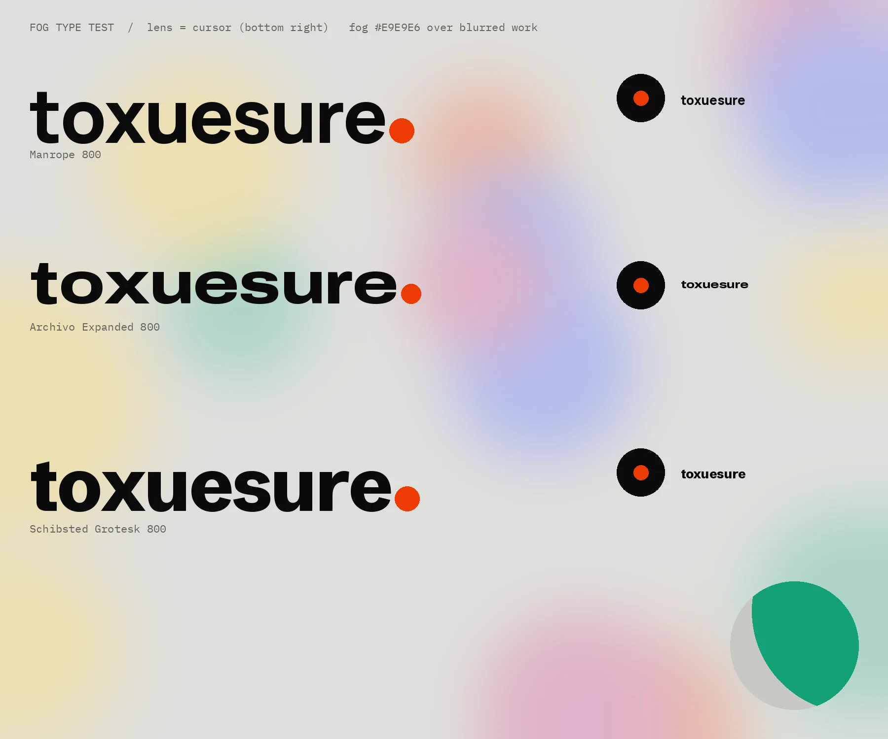
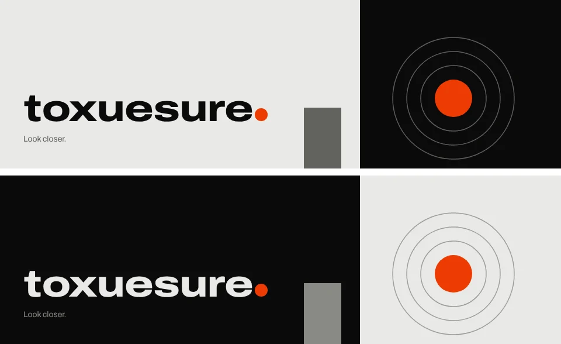
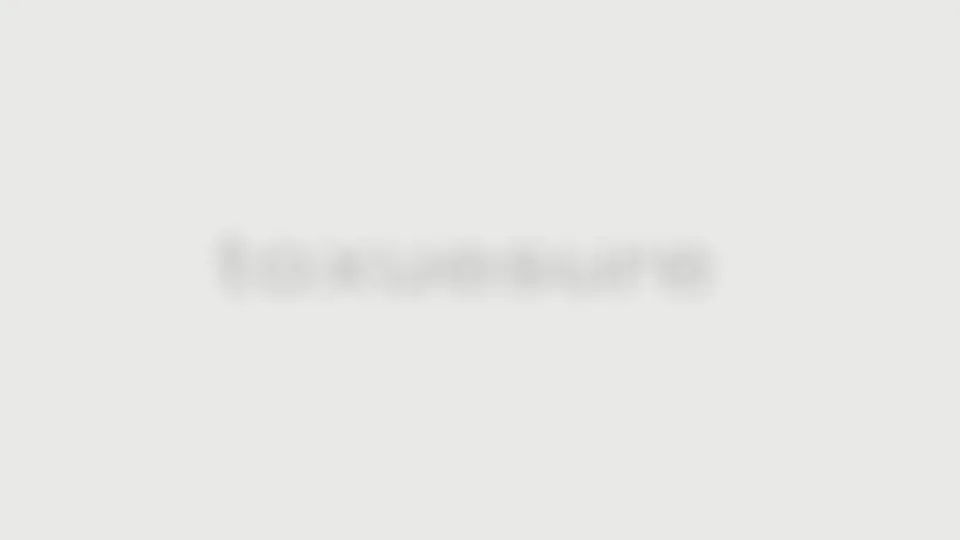

CH. 01 / 2026 / Blender
The intro
Fog, a rack focus, one dot. Three and a half seconds.
Look closer.
Move to look through the fogPress and hold to look
CH. 01 / 2026 / Blender
Fog, a rack focus, one dot. Three and a half seconds.
CH. 02
Play
Tests, studies, things that didn't need a reason.


Process
01 / Storyboard
105 frames. Fog, a rack focus at 14 to 28, the dot lands at 40, hold, cut.
02 / Script
Python builds the scene in Blender. Every timing is a parameter at the top.
03 / Check frames
Single frames rendered and looked at before anything else. The focus was snapping too early. Fixed.
04 / Render
Eevee, Standard view transform so the colours stay exact. Ctrl+F12.

About
I'm Aniket. I make things move. toxuesure is a word with no meaning, so it means whatever I think. Everything here starts in fog.
© 2026 toxuesure.